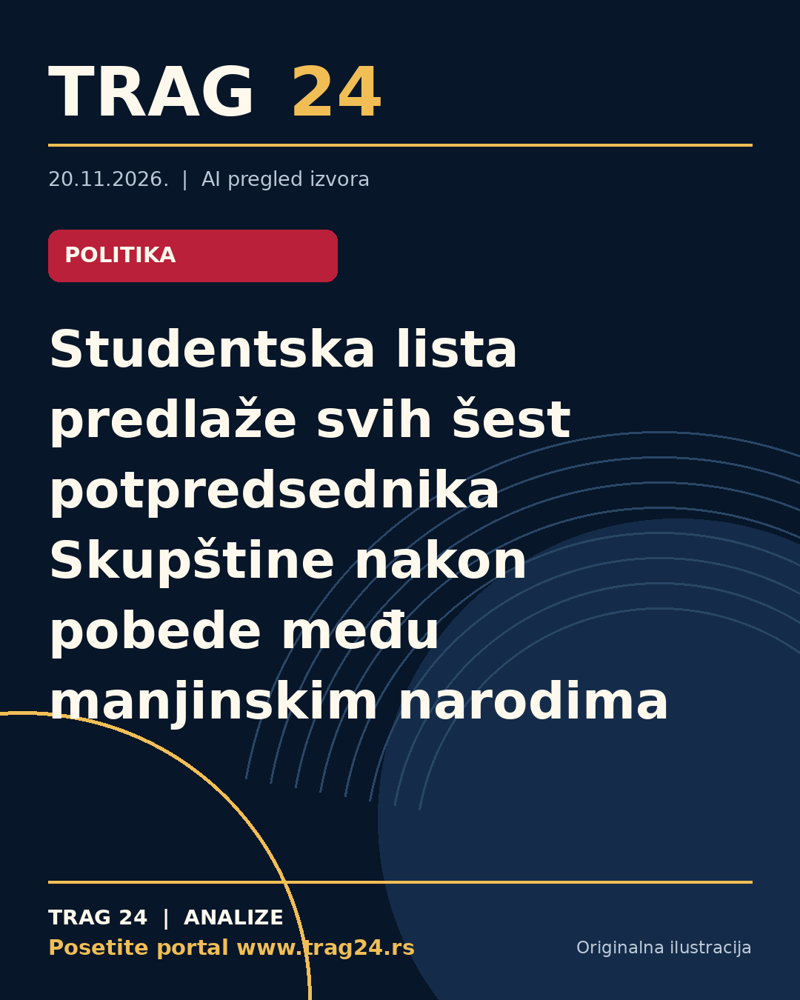

Studentska lista predlaže svih šest potpredsednika Skupštine nakon pobede među manjinskim narodima

ŠTA SE DOGODILO
Šef poslaničke grupe Studentska lista Jovo Bakić obrazložio je tokom rasprave o predloženim potpredsednicima Skupštine Srbije zašto ta lista predlaže svih šest potpredsednika, ne ostavljajući pojedine pozicije manjinskim listama. Razlog tome je kako je naveo njihova ubedljiva pobeda na izborima među manjinskim narodima u Srbiji.
HRONOLOGIJA
Tokom sednice Skupštine Srbije, Bakić je izneo obrazloženje i odgovarao na kritike poslanika opozicionih i bivših vlasti. Istakao je da su Bošnjaci, Mađari i Slovaci mahom glasali za Studentsku listu, što opravdava zahtev za svim potpredsedničkim mestima. Predsednik parlamenta Aleksandar Čupić upozorio je i opomenuo Bakića kada je on proširio diskusiju na afere bivše vlasti.
ŠTA NAVODE IZVORI
Bakić navodi da je Studentska lista pobedila među Bošnjacima, Mađarima i Slovacima, naglašavajući da je Savez vojvođanskih Mađara smanjen sa šest na dva poslanika, dok je Studentska lista pobedila i u toj zajednici. Takođe ističe da su tri četvrtine Slovaka glasale za njihovu listu. Odgovarajući na kritike o narušavanju demokratije, Bakić podseća na prethodnu praksu vlasti i sukob sa mladima i prosvetom. Odbacuje povezanost sa kontroverznim ličnostima poput Radoja Zvicera i supruge Veljka Belivuka. Takođe dodaje da kritika patrijarha nije isto što i kritika same Crkve i da će rad verskih zajednica ostati nepromenjen.
ŠTA JE POTVRĐENO
Potvrđeno je da je Studentska lista zatražila da svi potpredsednički položaji u Skupštini budu sa njihove liste zbog ubedljive podrške koju su dobili među manjinskim narodima. Izjave Jova Bakića o procentima glasova manjinskih zajednica i mogućem uticaju na predlog potpredsednika su eksplicitno navedene. Događaj se odigrava u Skupštini Srbije, sa zvaničnim obraćanjem i reakcijom predsednika parlamenta Aleksandra Čupića.
ŠTA NIJE POTVRĐENO
Nisu dostupni podaci iz drugih izvora o tačnim procentima glasova ili detaljnim izbornih rezultatima po svim manjinama. Takođe, informacije o tome da li su implicirani kritičari ili opozicija dali službeni odgovor na tvrdnje Bakića nisu potvrđene. Nema potvrde o reakcijama manjinskih lista ili drugih političkih aktera povodom ovog predloga potpredsednika.
ŠTA OSTАJE OTVORENO: Ostaje nejasno kako će ostali politički akteri i manjinske zajednice reagovati na ovaj predlog i da li će doći do promene u praksi raspodele potpredsedničkih mesta u budućnosti. Takođe nije poznato kako će ovaj potez Studentske liste uticati na dalju političku dinamiku u parlamentu. Ostaje i pitanje daljeg razvoja diskusije o ulozi verskih zajednica i tumačenju stava o patrijarhu iznetom u raspravi.
Izvori
- https://nova.rs/vesti/politika/studentska-lista-pobedila-medju-manjinskim-narodima-zato-predlaze-potpredsednike/
- https://n1info.rs/vesti/bakic-studentska-lista-pobedila-medju-manjinskim-narodima-zato-predlaze-svih-sest-potpredsednika/
- https://www.danas.rs/vesti/politika/bakic-studentska-lista-sest-potpredsednika/
Ova analiza je pripremljena uz pomoć veštačke inteligencije na osnovu javno dostupnih izvora. Navodi izvora nisu nužno nezavisno potvrđeni.